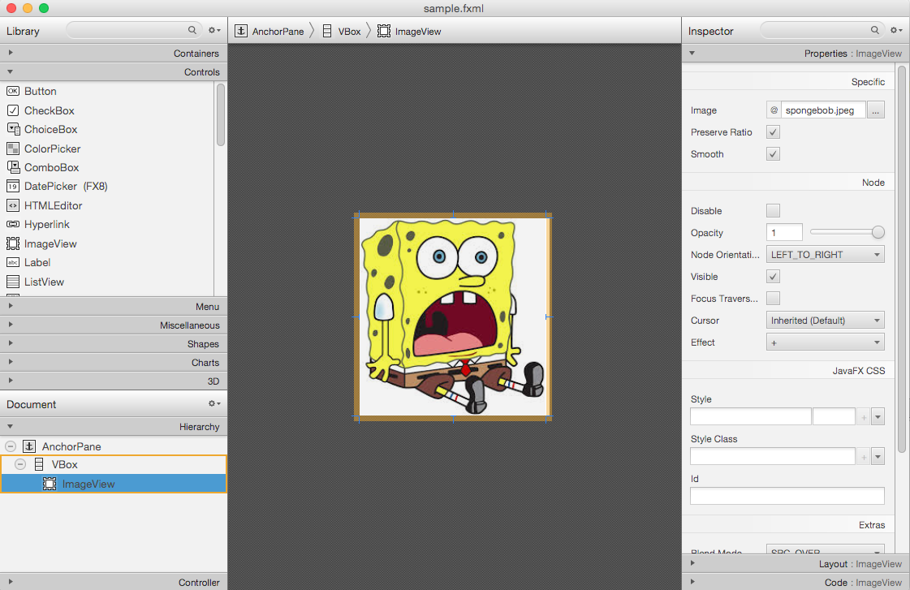
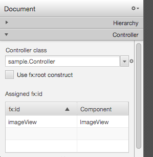
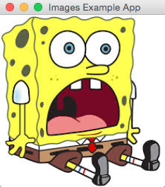

This section demonstrates how to create a simple application using Scene Builder to create an ImageView. For more information on ImageViews or Images check out the ImageView Oracle Documentation.
First, create a new project, or in your current project right click on the FXML file and click "Open in Scene Builder". For specific Scene Builder questions refer to the Scene Builder section of the tutorial.
In the FXML file in Scene Builder, on the left side under "Controls" drag an ImageView into the Pane. Scene Builder allows you to easily resize and format the ImageView in the way you want. On the right side in the Inspector, you can choose the Image you want to load in the ImageView. Make sure the image is in your project directory (/project_name/src/sample/image.jpg), because some problems can occur when you load an image from elsewhere, including the image just not showing up at all. Below is an example of an ImageView in Scene Builder.
Hard coding an image path is ok for static images that will never change, but it is good practice to do the setting in the controller class instead of in the FXML. On the bottom left "Controller" Tab in Scene Builder, choose the corresponding controller class as seen below.
The FXML should be created and modified in Scene Builder, but if you want to modify the FXML directly you can. The ImageView created in FXML should look something like this, with an Image inside of an ImageView, inside of a Pane:
<?xml version="1.0" encoding="UTF-8"?>
<?import javafx.scene.control.*?>
<?import javafx.scene.image.*?>
<?import java.lang.*?>
<?import javafx.scene.layout.*?>
<?import javafx.geometry.Insets?>
<?import javafx.scene.layout.GridPane?>
<?import javafx.scene.control.Button?>
<?import javafx.scene.control.Label?>
<AnchorPane maxHeight="-Infinity" maxWidth="-Infinity" minHeight="-Infinity" minWidth="-Infinity" prefHeight="243.0" prefWidth="234.0" xmlns="http://javafx.com/javafx/8" xmlns:fx="http://javafx.com/fxml/1" fx:controller="sample.Controller">
<children>
<VBox prefHeight="175.0" prefWidth="164.0">
<children>
<ImageView fx:id="imageView" fitHeight="243.0" fitWidth="231.0" pickOnBounds="true" preserveRatio="true">
<image>
<Image url="@spongebob.jpeg" />
</image>
</ImageView>
</children>
</VBox>
</children>
</AnchorPane>
In Main.java, load the FXML and Controller:
package sample;
import javafx.application.Application;
import javafx.fxml.FXMLLoader;
import javafx.scene.Parent;
import javafx.scene.Scene;
import javafx.scene.layout.AnchorPane;
import javafx.stage.Stage;
public class Main extends Application {
private Stage primaryStage;
@Override
public void start(Stage primaryStage) throws Exception{
this.primaryStage = primaryStage;
this.primaryStage.setTitle("Images Example App");
try {
FXMLLoader loader = new FXMLLoader(Main.class.getResource("/sample/sample.fxml"));
AnchorPane layout = (AnchorPane) loader.load();
Controller controller = loader.getController();
controller.setMain(this);
Scene scene = new Scene(layout);
primaryStage.setScene(scene);
primaryStage.show();
} catch (Exception e) {
System.out.println(e);
}
}
public static void main(String[] args) {
launch(args);
}
}
And finally, in the Controller class create a reference to the ImageView:
package sample;
import javafx.fxml.FXML;
import javafx.scene.image.ImageView;
public class Controller {
@FXML
ImageView imageView;
Main main;
public void setMain(Main main) {
this.main = main;
}
}
With this reference to the ImageView, we can modify the image however we want. With the regular image:
To use a different image in code, set the Image of the ImageView to something else. The Image object can take in a place in the current directory, or also an image online.
public void setMain(Main main) {
this.main = main;
Image image = new Image("http://i.imgur.com/xkJgXtK.jpg");
imageView.setImage(image);
}
Similarly, you can rotate the image by calling the .setRotate method:
public void setMain(Main main) {
this.main = main;
Image image = new Image("http://i.imgur.com/xkJgXtK.jpg");
imageView.setImage(image);
imageView.setRotate(90);
}
Look at the Oracle documentation for more information about what can be done with ImageViews or Images.